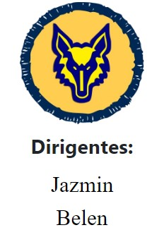
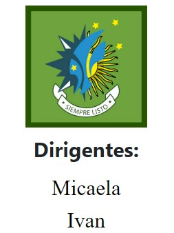
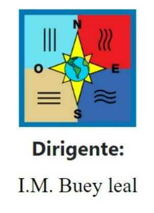
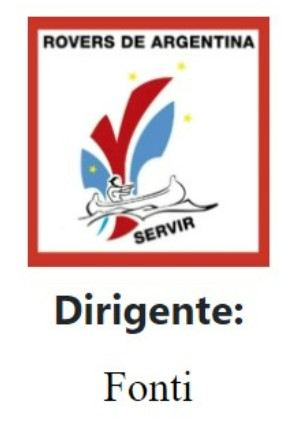

Educadores
Jefatura
I.M. Emanuel Viera
I.M. Yaguarete Entrañable
Ramas
Mananda
La manada es la sección que abarca de lo 7 a los 11 años y está formada por lobatos y lobeznas, niños que, a través del juego, descubren el mundo. Los niños están agrupados en unidades llamadas Seisenas. El marco simbólico es la fantasía, motivada en el Libro de las Tierras Vírgenes. El objetivo de esta sección es que los niños y niñas sean protagonistas de su propio proceso de crecimiento. El ciclo de programa es la forma en que la Manada organiza la vida de grupo. Se prepara, desarrolla u evalúa un conjunto de actividades, al mismo tiempo que se observa y reconoce el crecimiento personal de los niños. El lema de la Manada es Siempre Mejor
Unidad Scout
La Unidad Scout es la rama integrada por chicos y chicas de 11 a 14 años. La base de la sección son las patrullas que la forman y su marco simbólico: la aventura y la exploración. Las decisiones las toman los mismos integrantes a partir de los diferentes consejos de patrulla y de Unidad. Así, junto con los coordinadores diseñan lo que es cada ciclo de programa, es decir, el cronograma de las actividades a realizar. Los campamentos y la vida al aire libre dan el marco ideal para que los pequeños grupos que son las patrullas se desarrollen plenamente. El objetivo de la rama es que el chico que ingresa salga de la misma con conocimientos de escultismo (historia, campismo, primeros auxilios, cocina, etc.); con un espíritu de servicio, hermandad y colaboración; comprometido con las necesidades de sus pares y de la naturaleza; y que a la vez se desarrolle física y mentalmente. El lema de los scouts es Siempre Listos.
Caminantes
Está formada por adolescentes de entre 14 y 17 años, agrupados en equipos. El sistema que trabajan es el de empresas, donde cada equipo propone un proyecto que luego será evaluado y se elegirá uno para realizar entre todos. Las empresas se desarrollan dentro de los Ciclos de Programa. Es un lugar donde los jóvenes aprenden a ser generadores de sus propios sueños, transformándolos en proyectos y actividades para ser vividas, y no consumidores pasivos de ilusiones. Es el lugar donde las cosas que valen la pena ocurren cerca, junto a sus amigos, y no lejos, como en la televisión. El lema de los caminantes es Siempre Listos
Rover
El compromiso y la solidaridad es el clima motivador para la vida de los jóvenes de entre 18 y 21 años, un compromiso para con Uno Mismo, para con Los Demás, para con El Mundo y para con Dios. El objetivo en esta etapa es preparar a los Rovers para enfrentar su vida adulta, para proyectar y realizar sus propias metas, por eso, en esta sección los equipos se forman de acuerdo a intereses y proyectos en común, tras lo cual, se forman otros equipos para seguir trabajando. Es la última etapa en la vida scout del lado de los beneficiarios, terminada la misma, será o no la voluntad del joven colaborar con el grupo o emprender otros caminos. El lema de los rovers es Siempre Listos para Servir